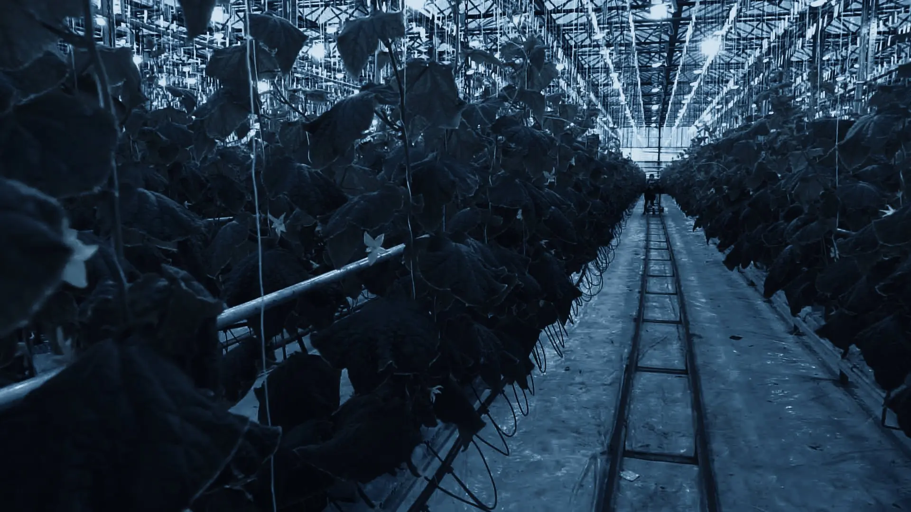

Live engine · runs in your browser
The loss is decided days before the alarm.
Set it up like your own plant, then watch the engine work and read what the warning would have been worth.
Every system here runs the same estimator on a synthetic log for that kind of facility. Changing the instruments changes what the engine has to work with, and the estimate widens accordingly. Cost figures are modelled from the numbers you set above, not measured savings. The engine reads and forecasts. It does not control anything.
Pilot
Run it on your own history.
Send a log you already keep. We replay it against your recorded incidents and show how much warning was available, event by event, including everywhere the engine would have missed.
- No hardware, no install, no change to how you operate.
- Your data stays yours. We sign before you send anything.
- You keep the full workings, and the file is deleted afterwards.

Validated against the reference models these fields use, and backtested on real commercial operating history.